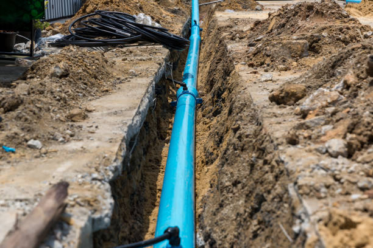

Discover How to Protect Your Home with Frisco’s Most Trusted Plumbing Professionals
Posted by on 2024-06-07
Title: Discover How to Protect Your Home with Frisco’s Most Trusted Plumbing Professionals
Your home is your sanctuary, a place where you find comfort and peace. It's also a complex system of structures and utilities that require regular maintenance to ensure everything runs smoothly. Among the most critical systems in your home is the plumbing. A well-maintained plumbing system safeguards not only the functionality of your house but also the health of your family. In Frisco, homeowners have the privilege of access to some of the most trusted plumbing professionals in the industry. This essay will guide you through how these experts can help protect your home from potential plumbing disasters.
Firstly, understanding why professional plumbing services are essential is key. Plumbing issues can range from minor leaks to major pipe bursts, all of which can cause significant damage if left unchecked. Water damage can lead to mold growth, structural problems, and costly repairs down the line. By enlisting Frisco’s trusted plumbers, you're investing in preventative measures that could save you not just money but also countless headaches.
One way these professionals help safeguard your home is through regular inspections and maintenance checks. These routine assessments allow plumbers to catch small issues before they escalate into bigger problems. For instance, a slow drain might indicate a clog building up in your pipes; left unattended, this could result in sewage backups or burst pipes. The trained eye of a plumber will identify such concerns early on and provide timely solutions.
Plumbing experts in Frisco are also equipped with state-of-the-art technology for more precise diagnostics and repair work. Techniques like video pipe inspection enable them to peer into the depths of your plumbing without invasive procedures that could harm your property further. This modern approach ensures accurate pinpointing of problems like hidden leaks or tree root intrusions into sewer lines.
Another critical service offered by these professionals is water quality testing and filtration system installations. With environmental factors affecting water supplies across cities, ensuring clean water for drinking, cooking, and bathing has become vital for many homeowners’ peace of mind. Frisco’s top-notch plumbers can test your water for contaminants and recommend appropriate filtration systems tailored specifically for your household needs.
Emergency services are yet another aspect where having a reliable plumber comes into play significantly. Emergencies don’t wait for business hours; they happen at all times - day or night - often requiring immediate attention to prevent extensive damage or hazards within homes . Fortunately , many plumbing companies in Fr ico offer 24/7 emergency response teams ready to tackle any crisis swiftly , minimizing damages and restoring safety .
Furthermore , educating homeowners about preventive practices forms part of their services . Knowledgeable professionals will give valuable advice on simple habits that maintain optimal functioning ; things like proper disposal methods avoiding putting grease down sinks , recognizing what shouldn ’ t be flushed down toilets , knowing how shut off main valves during emergencies – all contribute towards long term protection .
In conclusion , protecting one ’ s investment — our cherished homes — requires vigilance dedication good judgment when it comes selecting who trust care take integral components structure utility systems . Thankfully residents have access highly skilled diligent workforce comprised F risco ’ s most trusted piping specialists whose commitment excellence stands shield against unforeseen mishaps malfunctions ensuring smooth sailing every turn tap flush handle secure haven we call home remains intact generations come .